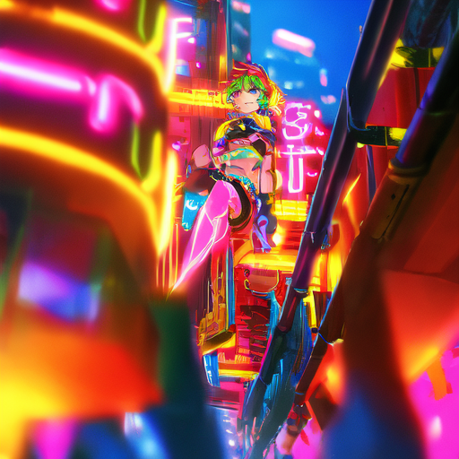
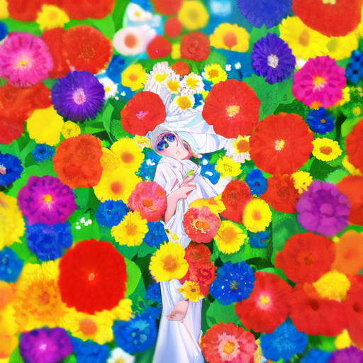
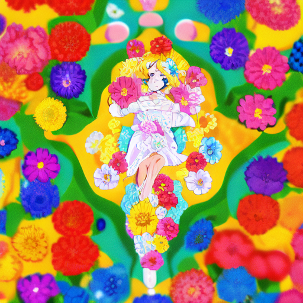
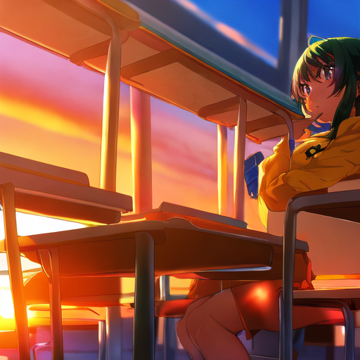
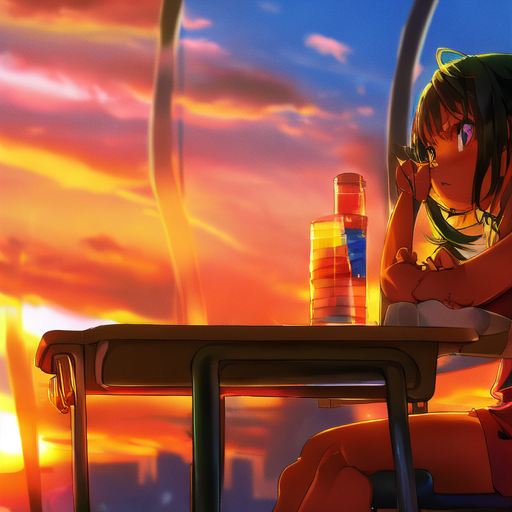
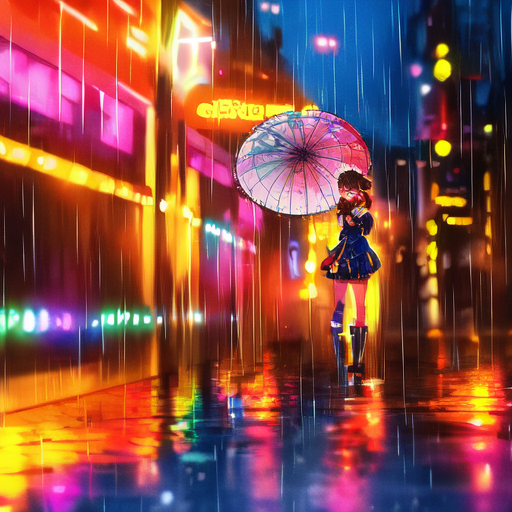
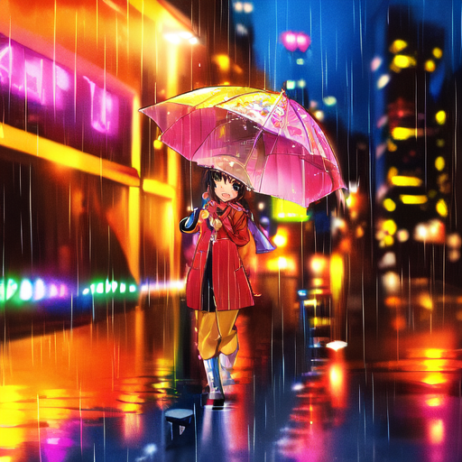

v5b_e2
hue 0.581 · sat 0.730 ◆ 色彩分更高

v5c_e3
hue 0.537 · sat 0.700
甜点区间已由你肉眼锁定：1.2~1.5 可用，1.5 是上限，1.8 崩。这 8 张是把该口径套进正式内容场景的结果—— 这就是能进作品集的成图口径。每行左右对比，左 v5b_e2（512 老甜点），右 v5c_e3（768 新训）。挑出胜者，写入引擎正式配置。







| 权重 | 均值 hue_sim | 均值 sat | 胜场 |
|---|---|---|---|
| v5b_e2 | 0.505 | 0.720 | g1 g2 |
| v5c_e3 | 0.508 | 0.706 | g3 g4 |
数据结论：两版打平（均值几乎重合，各赢两个场景）。色彩指标分不出胜负——这符合预期，两版的差距本就应在 768 的线稿/笔触上，量化测不到。所以下面的问题只有一个：
口径：seed=42 · 30 steps · cfg 7.5 · lora_scale=1.5（锁定） · 正面含 vibrant colors · 负面含 monochrome, greyscale
胜者配置将写入 sd_config.yaml：weight_name + scale 1.5 + prompt 模板更新。